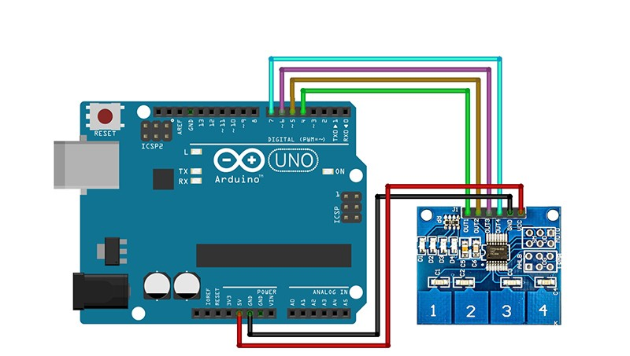

My Projects
The Climate Crusader
A smart AI-based climate analysis and forecasting tool using machine learning and open-source weather datasets. It enhances forecast accuracy and helps visualize climate change effects for better awareness and action.

Obstacle Detection for the Visually Impaired
An Arduino-powered ultrasonic sensor project that detects nearby obstacles and alerts users with sound, enabling safer navigation for visually impaired individuals.

4-Way Capacitive Touch Sensor Logger
This ESP8266-based system logs real-time touch input from a TTP224 module to Google Sheets via Google Apps Script — perfect for IoT applications.
 📥 Download Touch Sensor CodeRFID Entry Access System
A simple RFID-based security system using servo, buzzer, LEDs and Arduino. Valid cards trigger unlocking while invalid entries activate a warning system.
📥 Download RFID Code